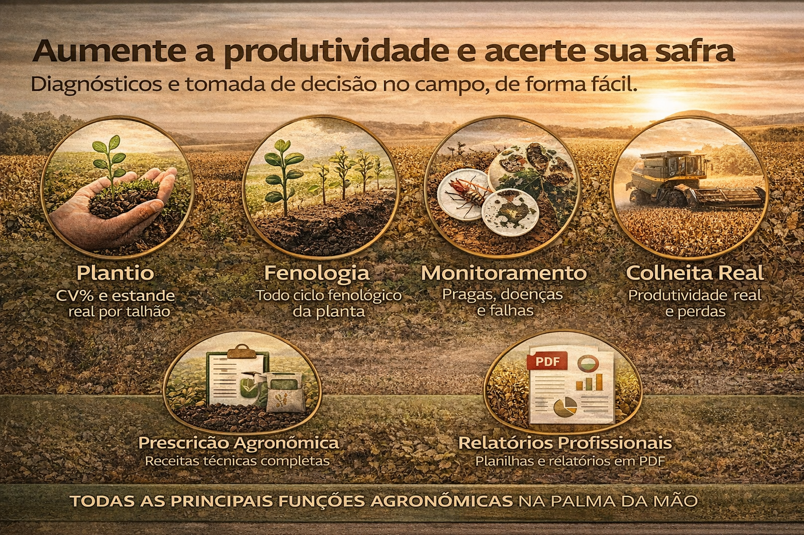
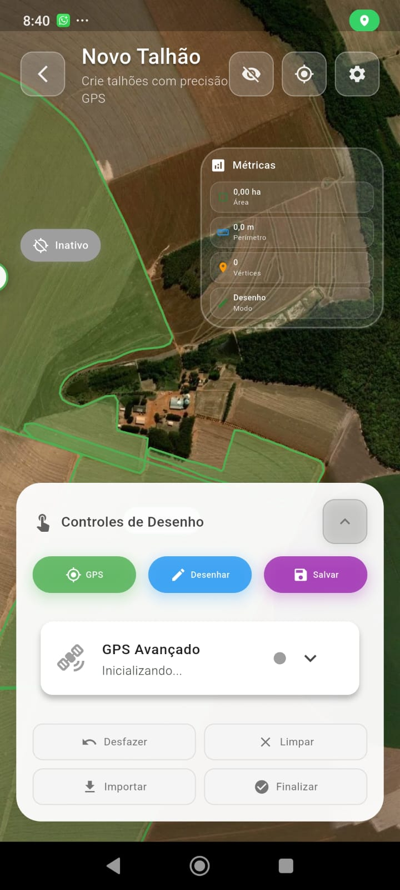

A plataforma inteligente para gestão agronômica, monitoramento de lavouras e tomada de decisão baseada em dados.
Transformando observações de campo em inteligência agronômica para produtores, consultores e empresas do agro.
O FortSmart é uma plataforma digital voltada exclusivamente para o agronegócio. Foi desenvolvido para organizar o monitoramento técnico por talhão, garantir rastreabilidade das operações e apoiar decisões baseadas em histórico real de campo.
Mais do que um aplicativo, o FortSmart é uma ferramenta de gestão agrícola orientada por dados.

Situações que todo produtor e consultor agronômico já enfrentou.
O FortSmart resolve isso com organização, rastreabilidade e inteligência de dados.
A diferença que o FortSmart gera na sua operação.
Talhões
Monitorados
Registros
Técnicos
Relatórios
Gerados
Histórico
por Safra
Uma plataforma construída para os profissionais do agronegócio.
Controle técnico da propriedade, organização por talhão e histórico por safra.
Registro profissional estruturado, relatórios comerciais e valorização do trabalho técnico.
Padronização de registros, organização coletiva e rastreabilidade operacional.
Gestão por área produtiva, controle histórico consolidado e base para planejamento estratégico.
Comparação entre áreas, avaliação técnica detalhada e monitoramento estruturado.
Conectado com a evolução digital do agronegócio brasileiro.
Cada registro vinculado à localização exata do campo.
Informações estruturadas, acessíveis e rastreáveis por safra.
Compartilhe laudos profissionais com um link, de qualquer lugar.
Histórico completo de aplicações, monitoramentos e visitas.
Compare safras, identifique padrões e melhore a eficiência.
Registre no campo, acesse no escritório. Sempre sincronizado.
Muitos produtores e consultores ainda enfrentam barreiras operacionais diárias como:
Dados espalhados em cadernos e planilhas soltas
Dificuldade em rastrear safras passadas por talhão
Manejo baseado em memória, sem dados técnicos concretos
Talhões Monitorados
Registros Técnicos
Relatórios Gerados
Histórico por Safra
Ferramentas essenciais para o produtor e o consultor agronômico gerirem a lavoura com precisão.
Delimite e organize cada área produtiva com precisão via GPS para controle total da lavoura.
Gere relatórios profissionais de plantio, insumos, monitoramentos e histórico de campo.
Produtores e consultores acessam histórico real de campo para tomada de decisão estratégica.
Campo
Coleta de dados
Aplicativo
Mobile Offline
Sincronização
Cloud & API
Análise
IA Agronômica
Relatório
Técnico / Web
Decisão
Ação no Campo
Cada módulo do FortSmart foi construído para resolver um problema real da gestão agrícola.
Organiza a propriedade em unidades técnicas individuais com histórico próprio.

Ferramenta para registrar ocorrências técnicas diretamente na lavoura.
Controle técnico completo de todas as aplicações realizadas na lavoura.
Avaliação consolidada do talhão, transformada em relatório digital compartilhável.
Mais do que registrar. Decidir. O FortSmart consolida as informações em uma visão gerencial poderosa.
Entre safras e talhões
Identificação de reincidências
Avaliação de resultados do manejo
Ação orientada por base técnica
🧠 Resultado Estratégico
FortSmart — mais do que um app, uma ferramenta de gestão agrícola orientada por dados.
Funcionalidades exclusivas que elevam o nível do aprendizado técnico.
Acompanhe o ciclo biológico da cultura desde a semeadura até a colheita. A visualização fenológica permite entender cada estádio de desenvolvimento da planta, conectando a teoria da sala de aula com a realidade do campo.
Um dashboard inovador que consolida os dados coletados ao longo de toda a safra. Métricas de produtividade, rastreabilidade e análise comparativa diretamente no celular — transformando dados em decisões inteligentes.
O FortSmart como parte da evolução natural da agricultura.
Controle manual, registros em papel e decisão empírica.
Aumento de produtividade e ganho de escala operacional.
Uso de GPS, monitoramento técnico e levantamento de dados espaciais.
Sistemas de registro, aplicativos móveis e organização digital.
Histórico estruturado, relatórios online e decisão técnica orientada por dados com o FortSmart.
Lógica operacional baseada na realidade técnica e nas necessidades práticas do dia a dia no campo.
O aplicativo Mobile funciona perfeitamente sem internet. Você sincroniza os dados apenas quando tiver conexão.
Histórico georreferenciado (Polígonos e Pontos GPS) para saber exatamente o que aconteceu em cada talhão.
Algoritmos que analisam a severidade dos problemas e auxiliam a tomada de decisão preventiva.
Web Dashboard completo com gráficos técnicos para consultorias e grandes empresas.
Geração de caldas e receitas integrando segurança e adequação climática.
Uma plataforma agronômica robusta e de alta complexidade, projetada para cobrir de ponta a ponta o ciclo de vida da lavoura. Diferente de aplicações genéricas, possui algoritmos proprietários e Inteligência Artificial focada na precisão diária do consultor e do produtor.
Painel preditivo e reativo (lazy loading) capaz de processar grandes volumes de dados sem perda de performance.
Essencial para o planejamento milimétrico da semeadura, calibração de maquinário e acompanhamento da emergência.
O motor pericial do sistema para geração de receitas e caldas complexas (pulverizações aéreas e terrestres).
O coração de mapeamento, superando APIs padrão através do algoritmo FortSmartPolygonController.
Maior centralizador de infos de R.T., condensando escaneamento total em uma timeline unificada.
Painéis de Business Intelligence (BI) convertidos com altíssima performance para o cenário mobile e dashboard.
Controle rígido de químicos, biológicos e adubação orgânica garantindo o balanço do Retorno sobre Investimento (ROI).
Especialista na mensuração técnica de perdas no fim da cadeia produtiva de Soja e Milho.
O módulo state-of-the-art desenhado exclusivamente para pesquisadores acadêmicos ou R&D científico.
O FortSmart transforma a complexidade do campo em documentos executivos prontos para compartilhamento. Valorize seu trabalho técnico com relatórios que impressionam clientes e investidores.
A FortSmart não para. Estamos construindo a maior infraestrutura de inteligência agronômica da América Latina.
Integração nativa com imagens NDVI e algoritmos de detecção automática de estresse hídrico e nutricional.
Modelos estatísticos avançados para previsão de produtividade baseados no histórico acumulado da safra.
Conexão direta com estações meteorológicas e sensores de solo para monitoramento em tempo real (Real-time Agro).
Focado em Enterprise: Cooperativas, Revendas e Consultorias de grande porte.
Potencialize a recomendação técnica de seus consultores e fidelize seus clientes com tecnologia de ponta.
Crie um ecossistema digital conectando sua empresa diretamente aos talhões dos seus produtores parceiros.
Saiba mais sobre parceriasPronto para digitalizar o campo? Preencha os dados abaixo e entraremos em contato para mostrar como o FortSmart pode transformar a sua gestão agronômica.